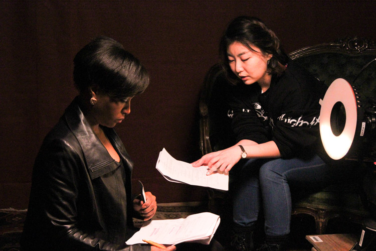

An anxious silence stifles the Louis Hall lobby. It's 5:30 a.m. on Jan. 30, and the remaining batch of crew members for one of Northwestern's largest student films slumps against the walls. They've been preparing for this weekend for two months—ordering equipment, gathering personnel, coordinating meetings and reviewing the itinerary over and over. Communication junior Zach Lorkiewicz, the film's first assistant director, paces back and forth across the muddy carpet. He crosses his arms, cups his chin and fidgets with his papers, but his feet maintain an even pace.
Grip: A technician who provides camera or electrical support, builds and manages the expensive equipment and takes direction from one key grip
Communication junior Mark Davis, key grip, sits in the corner. I lean over and ask him what to expect for the day. He shrugs and offers up empty, work-gloved hands. "I don't know," he says. "I've never been on a set this big."
The movie is called Solace. This year's winner of student production company Studio 22's coveted Bindley Grant, Solace cost about $8,300 and recruited roughly one-in-eight Radio, Televison and Film undergrads (42 total crew members), more than any other Northwestern short film this year. Director and Communication junior Mei Gao has been working on the sci-fi thriller since last summer, when she wrote the script. Solace explores the idea of memory theft, and while Gao cites decay and coping with tragedy as themes, she says she's "very open to people interpreting my projects."
The script underwent 11 rewrites before it went to Studio 22. Along with 10 other scripts pre-selected from a field of 29 by the 12-person board, Gao had 10 minutes to make Solace's case for the $7,500 Bindley Grant.
Pitching a film to Studio 22 is a tense, two-day affair. Before the board lets in the first student (who, coincidentally, would be Gao), Communication junior Marion Hill, executive co-chair of Studio 22, stands in front of her 11 colleagues and spreads her arms out wide. She tells them to breathe in through their noses, out through their mouths. Everyone raises their arms and lets them fall again in 30-second meditations. Then the lights up front go dark. Hill retakes her seat and everyone swivels to face the front of the room. Gao enters.
From the outset, it's obvious that the petite, round-faced woman with the neat hair and stylish glasses standing before the board is not easily fazed. The Studio 22 board members sit in silence—questions are prohibited on the first night—but Gao marks her 10 minutes with a coolness and a meticulousness that will define her approach for the next two quarters. She pitches a sci-fi film in a dilapidated setting, and her presentation covers everything from production design (what the sets and props and costumes will look like) to cast to camera movements. Her influences are Her and Requiem for a Dream.
The 10 minutes evaporate, and Gao leaves the room to polite applause and the reminder that the board will see her again tomorrow night.
Ten other pitches follow, and the sheer scope of ambition in the RTVF department becomes apparent. Students detail their prospective budgets, color schemes, costume choices and even locations. One aspiring writer/director discusses his plans for a sports film. Two elaborate pitches, one about hip-hop and the other a small-town neo-Western, play music in the background. Ambition of the project, feasibility and director experience should all combine to "provide a better educational filmmaking experience," Hill says.
As pitches come and go, something else becomes clear: Everyone knows everyone else. Those who come before the board are friends outside that gray-washed room in Louis Hall. But as soon as the doors shut, Hill and Communication junior Dan Rufolo, Hill's executive co-chair, lay down the instructions. It's all professional.
After the board hears all 11 pitches, Studio 22 convenes to decide on the "red flags" for each movie—major concerns that the prospective filmmakers must address the following night. How will the movie portray violence? Which film festivals are being targeted? Will the actors be Northwestern students or not? Everything needs to be accounted for, and the writers, directors and producers need to address these questions if they want a shot.
On the second night, discrepancies emerge between the front-runners and the also-rans. The Studio 22 board divides into its respective sections—Executive Co-Chairs, PR, Talent, Production, Finance, Industry, Outreach and Script—and forms a circle.
The students pitching have eight minutes at each section to detail their visions, and amid all of the fidgeting, careful eye contact and formal question-skirting, those who have it stand out. They field the hyper-detailed queries like they've known the answers for months. And Gao has been here before. During her sophomore year she won a $1,000 grant from Studio 22 for her film Improv.
"The process informed a lot of logistical details about the project," Gao says.
"They ask you, ‘Who is your character? What's your theme?' Those are things as a filmmaker you should be thinking about anyway, so that was very helpful."
Gao has it on the second night of pitching—the picture of perma-calm from 24 hours earlier never left.
"We were excited to see what Mei would do with this script," Hill says. "It was definitely an ambitious genre that would not be easy to create visually or artistically. We are always looking for education, ambition and quality—Solace was a strong pitch in all those areas."
A week later Gao had $7,500.
"There can be no hiccup. Every shot has to be perfectly planned."
As the final car pulls out of the Louis Hall parking lot, Gao's words already sound like a preposterous expectation. Our group is a half-hour
behind schedule. The ride is uncomfortable, and not just because four of us are crammed across three seats. Conversation flies from RTVF inside-joke to inside-joke, and the only respite is a meta-analysis of modern Disney Channel stars.
Sound designer: The person responsible for creating the aural world of the show through sound effects, acoustic adjustments, music editing or anything else the audience hears
We arrive at the day's location—a Blackhawks bar in Skokie reserved by the Solace team—and stepping through the front door feels like walking into a hurricane. Everyone is swept up in the action, racing around to fulfill their roles. At one end of the bar, Communication junior David Brown, sound designer, trains a freshman to use the boom mic, while Communication senior Bobby Ramirez, craft services coordinator, dishes out breakfast at the other end. Cups of coffee travel hand over hand and the crew gulps it down in gallons. It's controlled, caffeinated chaos.
The bar transforms into the sci-fi world of Gao's script, moving forward in time until the tables are awash in neon and the drinks glow green and blue. An old-fashioned Coke machine pulses a new color of light every second. A table up front is outfitted with a sinister, red-eyed neon clown sign. Lights flash on and off.
Steadicam: Stabilizing equipment that isolates the camera from its operator’s movement, allowing the camera person to move without producing a shaky shots
But every hurricane has an eye. As the proverbial storm of production rages in its half-coordinated brand of disorder, Gao navigates the bustle like she's never known anything else. Lorkiewicz hustles over with a question—Gao has the answer. The light in the corner washes out the shot—lower it six inches. The Steadicam mount needed for the first shot takes too long to calibrate—perfect the set in the meantime. It's bedlam, but Gao and her producers, Communication junior Matt Hooker and Communication sophomore Leila Sherbini, have plotted their course with purpose—the only possible way to proceed is forward, and they never lose control of the ship.
"My personality is always pretty calm," Gao says. "If I know something works, I can think very clearly about it, even under pressure."
Since her freshman year, Gao has taken every crew position she could, from lighting to cinematography, approaching everything as a "blank slate" to learn more about each individual aspect of the total on-set dynamic.
"Learning everything I can about different departments is very helpful to me as a director, because I'm never panicking," she says. "I always understand what's happening."

Mei Gao directs her main actress, Toya Turner, on the set of Solace.
“My personality is always pretty calm,” Gao says. “If I know something works, I can think very clearly about it, even under pressure.”
Setting up the first shot takes about three hours, and when we finally arrive at the moment of action, the silence is almost spooky. The Solace team has carved a clear path through all of the debris—a narrow lane for Chicago actress Toya Turner to traverse as Communication junior Terence Yoon, director of photography, records her from the front. Off-camera, the shot looks like the first road cleared after a nasty storm. On-camera, it looks like another world entirely. The hanging lights and wires and boxes disappear, and all that's left is the neon clown sign, some blurry extras, curiously-colored drinks and Gao's pulsing sci-fi world.
Sound check: When the actors run through their lines before a shot, allowing the sound operator to check audio levels and prepare for any drastic changes in volume
The director calls for quiet on the set. Sound check is clear. Camera check is clear. All is still, and after just a beat, "Action." Turner enters the bar and walks down that narrow path. Yoon stays in front of her with the Steadicam, but after 15 seconds Gao cuts. It's not quite right. Yoon needs to walk faster. Take two—cut. This light needs to be raised. Take three— cut. Lower that light again. Take four— cut. Turner should look over at the bar as she enters. Finally, it looks like they have it, but the editing room is going to want options, so best do it again. The scene goes on, and finally, after six meticulous takes, Gao utters those three long-awaited words: "That's a wrap."
Three hours of prep yield mere seconds of film. Then the crew launches back into motion. The hurricane surges again. I look over to Weinberg senior Jeremy Gaines*, a grip. "Just short bursts of action," he says. "Like war."
As the sun rises and begins to seep through the trash bags on the windows, the crew finds its second wind. The alternating waves of set-it-all-up and shut-the-hell-up find a strange sort of rhythm, and soon Solace is humming like a machine.
As production goes on, the culture of the crew shows through the outer layer of polish. People relax, and as each day settles into a rhythm, side conversations, both familial and bizarre, begin to drift around the set. Two sophomores theorize what might happen if they cut themselves in half and hugged. Some seniors hang in a corner and talk about their grievances with Wes Anderson. The dialogue ranges from scholarly and opinionated to strange and off-putting, but it's easy to sense that all of it is distinctly RTVF. The crew plays "Blank Space" by Taylor Swift on a loop when they pack up at the end of the day, and they ogle over on-set commodities like peanut butter and homemade meals.
In the vein of, say, The Addams Family, the crew of Solace is one macabre, off-kilter collective. Ramirez doles out home-cooked minestrone for lunch. Communication junior Catherine Yang, hair and makeup designer, sits on the stairs amid a pile of bottles, mirrors and brushes and makes conversation with the actors as she adds burn marks to their temples. Rarely do you see someone alone. People are engaged in conversation, jumping up to help or running back to tell Ramirez, "Oh my God, this minestrone is delicious."
"I think the creative understanding between me and my crew heads is really great," Gao says. "I've either worked with them before in different capacities or we've talked about art and film. The communication is easier. That made this process really smooth. Everyone's friendly on set."
In the world of RTVF, many students will tell you there are two factions: the "production kids" and "non-production kids." Film majors who collaborate—Apatow and Rogen, Scorsese and De Niro, Burton and Depp—tend to stay together and keep working.
"When you're a production kid, all your weekends are on set," Ramirez says. "There are kids you're spending 16-hour days with for three days straight."
Solace shoots over two weekends, and after dozens of hours on set, the hurricane makes landfall and the storm passes. Most people pack up and leave, and they won't hear from Solace until its premiere. But Gao, her producers and her editors still need to assess the damage. Post-production looms. Yang needs to compose a score. Gao and Lorkiewicz need to make cuts. And Studio 22 needs to see a test screening. Gao likes the metaphor of seeing the movie as a puzzle. All the pieces have just spilled out onto the ground, and it's time to put it all together.
"I really like our workflow in the post-production process," Gao says. "We're not treating anything as sacred."
Post-production is a team effort. Gao and Lorkiewicz take things out, add scenes back, rearrange the narrative and reinterpret some of their shots. The initial vision has to stay intact, but the path from Point A to Point B can change. "I'm very much open to other people's creative vision," Gao says. "In fact, that's what I wanted to bring to the table, because each person has their expertise. I'm good at uniting everything under the same vision."
Picture-lock: The stage in production when the film’s visual arrangement and length are officially completed and approved with no future changes to be made, allowing the sound designer to apply any necessary auditory adjustments
Solace will picture-lock after an astounding 12 weeks of editing. The audio work has a deadline of May 29—Dillo Eve—and the final cut of the film will premiere with the rest of the Studio 22 line-up on June 6. For Gao herself, however, it seems like the work is never done. She's turning her focus to a pair of animated shorts currently in development, and next year she'll have a two-quarter senior directing project. Gao will submit Solace to film festivals, but its impact on her extends beyond any potential accolades.
"I noticed those themes about, say, memory or nostalgia or escapism are things that are very present in my own life," she says. "I'm more daring to confront heavier subjects, in a way, because that's kind of what Solace is. The whole memory-transfer thing—using sci-fi elements to say something about the present, what we rely on to face our problems— that's a technique I want to keep pushing in my future work."
A week before picture-lock, Gao and Solace go back before the board of Studio 22. She'll screen a near-final version of the film, followed by a round of feedback from her peers. Fifteen people sprawl across the 60 seats in the Louis 119 screening room, and when the lights go down, Gao glides off to the side and waits against the wall. She doesn't watch the audience—it looks like she's analyzing her own movie. The script that was once a 15-minute short has been reduced to nine minutes and 20 seconds. It'll lose another 50 seconds before it's all said and done. That long tracking shot that took the crew three hours to put together on day one? They used maybe a fourth of it. All of two seconds.
When the lights go up, Gao takes up her post behind the lectern and fields comments. The board is constructive: This scene was a little confusing, that transition might be improved with a sound cue, the ending was tough to read. Gao jots down some notes. She never offers an explanation or defends herself—just takes it all cold. As tough as it might have been to read the film, it's even tougher to read her.
The critique winds down. Frankly, it sounds like there's a lot of work left to do. Gao is about to leave the lectern when Marion Hill raises her hand for one last comment. Her words are intentional and clear: "I thought it was really beautiful." Gao breaks—the corners of her mouth turn up. She smiles.
After the board leaves, Gao talks to Hooker. Of course, their work isn't over. There's more to add, more to cut. Next week, they'll have another screening just for non-majors. It will be a more complete version, but Gao is still nervous.
"I talk to non-majors, and I'll be like, ‘Yeah, we're making a movie,' and I think the image they have in mind is I'm taking a camcorder and just doing this," Gao says as she mimics waving around a handheld camera. "Once I talk more about what we actually do, I think people realize it's a lot of hard work. It's a lot of planning and interpersonal skills. Even physically, it's pretty taxing."
Hundreds of hours have gone into a movie that likely won't eclipse a run-time of 10 minutes. Yet, beneath all the footage on the cutting room floor is a director who simply found a story she wants to tell. Memory, loss, moving on—Solace is about all of these things, but the experience of the movie is greater than that.
"I think movies are different expressions of some sort of theme," Gao says. "I love how you could, as a viewer, derive your own meaning from these, because you're actually making it your own. It is an escape, but at the same time, for me it's kind of like an alternate channel for you to know something about yourself."
*Full disclosure: Jeremy Gaines is a North by Northwestern photographer.